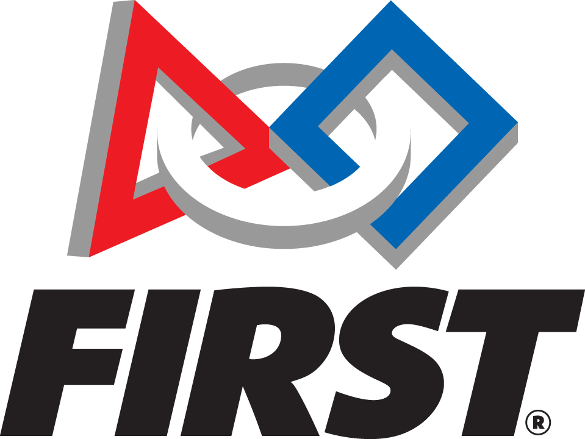
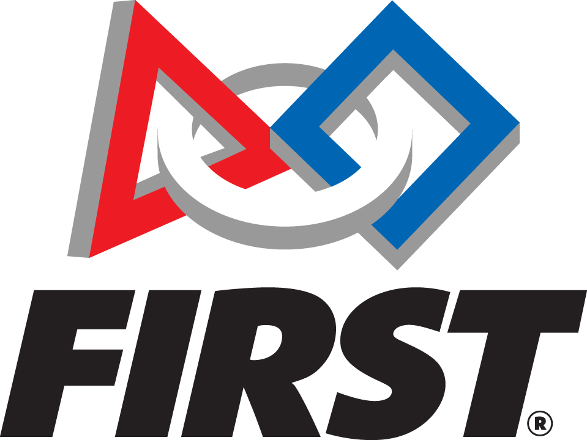

https://www.youtube.com/watch?v=ax0UZw8gwiE-Modeling an Epidemic
https://www.youtube.com/watch?v=NKMHhm2Zbkw-Oxford Mathematician explains SIR Disease Model
This modeling website was made by Dennis Yang for the 2020 FRC team 226 hackathon.
FRC is an international robotics competition run by the FIRST (For Inspiration and Recognition of Science and Technology) organization. Team 226 is a robotics team based in Troy, MI.
Team 226: http://www.hammerhead226.org/
 
